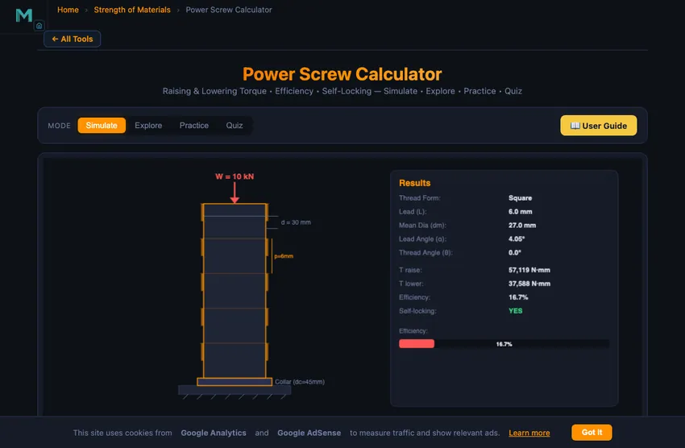
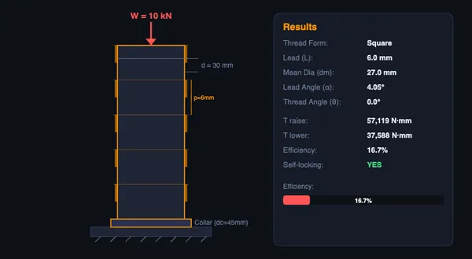

Power Screw Calculator
3D Model — Power Screw Calculator
Free power screw calculator — compute raising/lowering torque, efficiency, and self-locking for ACME, square, buttress, and trapezoidal threads. Try it free!
Raising & Lowering Torque • Efficiency • Self-Locking — Simulate • Explore • Practice • Quiz
1 Overview
The SI / Imperial switch in the mode bar reads the screw in US units: diameters, pitch and lead in inches, load in lbf and both torques in lbf·in. The on-canvas dimension callouts and the results panel convert with it. Efficiency, lead angle, thread angle, the number of starts and the two friction coefficients are dimensionless or angular, so they — and the self-locking verdict — read the same in either system.
The Power Screw Calculator computes raising torque, lowering torque, mechanical efficiency, and self-locking condition for lead screw mechanisms. Power screws convert rotary motion into linear motion and are used in screw jacks, vises, presses, CNC lead screws, and valve stems. This calculator supports four thread forms: square, ACME (29 degrees), buttress (45 degrees), and trapezoidal (30 degrees), each with different efficiency characteristics.
The interactive canvas visualizes the screw thread profile, the inclined plane analogy (which is how torque formulas are derived), and the force vectors acting on the thread surfaces. Readout cards display raising torque, lowering torque, efficiency, lead angle, lead, mean diameter, self-locking status, and thread half-angle. All values update in real time as you adjust the input sliders.
2 Entering the Inputs
The calculator opens in Simulate mode with the canvas showing the power screw visualization at the top. Below, the control panel offers thread form selection (Square, ACME, Buttress, Trapezoidal), and sliders for major diameter, pitch, number of starts, applied load, thread friction coefficient, collar friction coefficient, and collar diameter. A "Run Simulation" button triggers the calculation and animation.
To perform your first calculation: (1) Select a thread form (e.g., ACME 29 degrees). (2) Set the major diameter (e.g., 30 mm) and pitch (e.g., 6 mm). (3) Set the number of starts (1 for single-start). (4) Enter the load (e.g., 10 kN). (5) Set friction coefficients (thread and collar). (6) Click "Run Simulation" to see the animated thread engagement and read all calculated values in the readout row. The self-locking indicator tells you whether the screw will hold the load without applied torque.
3 Reading the Result
The canvas shows the screw thread profile with the load, friction forces, and normal forces illustrated. The animation demonstrates the inclined plane principle underlying power screw mechanics. The readout row shows eight values: Torque to Raise (N mm), Torque to Lower (N mm), Efficiency (%), Lead Angle (degrees), Lead L = n x p (mm), Mean Diameter dm = d - p/2 (mm), Self-Locking (Yes/No), and Thread Angle.
Experiment with different thread forms to see how the thread angle affects efficiency. Square threads (0 degrees) give the highest efficiency. ACME threads are slightly lower due to the 14.5-degree half-angle increasing effective friction. Increase the number of starts to see how lead angle increases, improving efficiency but potentially losing self-locking capability. A warning box appears when the screw is not self-locking (will back-drive under load).
4 The Formulas Behind It
Explore mode organizes power screw concepts into four categories: Fundamentals (lead, pitch, mean diameter, lead angle), Thread Forms (square, ACME, buttress, trapezoidal comparisons), Design (self-locking condition, efficiency optimization, collar friction), and Applications (screw jacks, vises, presses, CNC machines). Each concept card provides a detailed explanation with formulas and worked examples.
Key formulas covered include the torque to raise equation T_raise = (W dm / 2) [(mu pi dm + L cos theta) / (pi dm cos theta - mu L)] + collar torque, the efficiency formula eta = W L / (2 pi T_raise), and the self-locking condition mu >= L cos theta / (pi dm). These are the three most important equations for power screw design and appear in virtually every machine design exam.
5 Try a Problem
Practice mode generates calculation problems about power screws. Typical problems ask you to calculate the torque to raise a given load, determine whether a screw is self-locking, compute the efficiency, or find the lead angle for a multi-start screw. Enter your answer and check it. Step-by-step solutions show the complete derivation using the standard formulas.
Quiz mode presents five questions per session mixing theory (why is a square thread more efficient than ACME?) and numerical calculations. Topics include torque computation, efficiency comparison between thread forms, self-locking determination, and the effect of multi-start threads on lead angle. Review your results and retake to build confidence.
6 Engineering Notes
- Always calculate the lead first: L = n x p, where n is the number of starts and p is the pitch. This is the axial advance per revolution.
- The mean diameter dm = d - p/2 is used in all torque formulas, not the major diameter.
- For self-locking: if the lowering torque is positive, the screw is self-locking. If negative, it will back-drive (overhaul).
- Square threads give the best efficiency but are hard to manufacture. ACME threads are the practical compromise and are the most common in industry.
- Increasing the number of starts increases lead angle and efficiency but reduces the self-locking tendency. Single-start screws are preferred for screw jacks where self-locking is essential.
- Collar friction often accounts for 30-50% of the total torque. Do not neglect it in calculations.
- In Practice mode, draw the inclined plane diagram before substituting into the torque formula. This helps you keep track of the force directions and avoid sign errors.
Power Screw Calculator — Lead Screw Design & Torque Analysis


Power screws (also called lead screws or translation screws) are mechanical devices that convert rotary motion into linear motion to transmit power. They are fundamental components in machine design, appearing in screw jacks, vises, C-clamps, presses, machine tool lead screws, and valve stems. Understanding the torque required to raise and lower a load, the efficiency of the mechanism, and whether the screw is self-locking are essential skills for mechanical engineering students and designers.
A power screw works by applying a torque to rotate the screw against a nut that is either fixed or constrained from rotating. The load moves along the screw axis. The friction between the thread surfaces and at the collar (thrust bearing) determines how much torque is needed. The lead of the screw (axial advance per revolution) equals the pitch multiplied by the number of starts: L = n × p. The mean diameter dm = d − p/2 is used in all torque calculations.
Thread Forms — Square, ACME, Buttress, Trapezoidal
Four main thread profiles are used in power screws. Square threads have zero thread angle (θ = 0°), giving the highest mechanical efficiency, but they are expensive to manufacture and cannot be adjusted for wear. ACME threads (29° included angle, θ = 14.5°) are the most common industrial standard — they balance efficiency, strength, and ease of manufacturing. Buttress threads (45° included angle, θ = 22.5° on the load flank) are designed for heavy axial loads in one direction, such as in presses and artillery breeches. Trapezoidal threads (30° included angle, θ = 15°) are the ISO metric equivalent of ACME threads and are widely used in Europe. The thread angle increases the effective friction, reducing efficiency compared to square threads.
Self-Locking vs Overhauling
A power screw is self-locking when the friction is high enough to prevent the load from driving the screw backward without applied torque. The condition is μ ≥ L·cos(θ) / (π·dm). When this condition is satisfied, the torque to lower the load is positive, meaning external torque must be applied to lower the load. If the screw is not self-locking (the lowering torque is negative), the screw will overhaul or back-drive — the load will push the screw and nut apart without any applied torque. Self-locking is essential in screw jacks and vises for safety; overhauling is desirable in some automatic feed mechanisms.
A Car Jack Worked Example
A scissor-jack uses a power screw to lift a car. Specify the screw: 16 mm major diameter, ACME thread, single start with 4 mm pitch, μ = 0.15 between steel and bronze nut. The car weighs 1500 kg (14.7 kN). Find the handle torque to raise the load.
| Step | Working | Result |
|---|---|---|
| Mean diameter | dm = 16 − 4/2 | 14 mm |
| Lead | L = 1 × 4 | 4 mm |
| Lead angle | λ = arctan(L/(πdm)) = arctan(4/(π×14)) | 5.20° |
| Effective friction angle for ACME (29° included) | μ' = μ/cos(14.5°) | 0.155 |
| Torque to raise load | T = F·dm/2 × (tanλ + μ')/(1 − μ'·tanλ) | — |
| Plug in | T = 14,700×0.007 × (0.091 + 0.155)/(1 − 0.014) | T = 25.7 N·m |
| Handle force at 250 mm radius | Fhandle = 25.7/0.25 | 103 N (about 10.5 kgf) |
About 10 kgf of pull on a 25 cm handle — reasonable for an adult. The jack is self-locking (μ' > tanλ), so the car stays up when you release the handle. Each handle revolution raises the car by 4 mm (the lead). Lifting the car 10 cm requires 25 handle revolutions. That’s the trade-off: force multiplication is real, but you turn the handle many times.
Why ACME Beat Square Threads in Practice
Square threads are the most efficient (no thread angle to add friction) but suffered three practical problems that doomed them in industry:
- Manufacturing cost. Square threads need single-point lathe operation; ACME threads can be ground or rolled.
- No wear adjustment. When square threads wear, the nut backlash grows. ACME nuts can be split and adjusted to take up wear — standard practice on machine-tool lead screws.
- Stress concentration at thread root. Square corners produce stress concentrations that crack under fatigue loading. ACME’s 14.5° thread angle provides a fillet that distributes stress.
ACME (29°) is the North American standard; Trapezoidal (30° metric ISO 2901) is the European equivalent. Both lose about 4−6% efficiency compared to square threads but win on every other criterion.
When Ball Screws Replace Power Screws
For high-precision, high-efficiency applications, ball screws (with steel balls circulating between screw and nut) replace traditional power screws entirely. Ball screws achieve 90+% efficiency vs about 30−40% for ACME, and they have effectively zero backlash. CNC machine-tool positioning axes, robotic arms, and aerospace flight control all use ball screws. The cost is several times higher than ACME, but for precision applications the trade-off is overwhelming. Ball screws are also reversible — never self-locking — which means CNC axes need brakes to hold position when power is off.
References
- Shigley & Mischke — Mechanical Engineering Design, 10th ed., Chapter 8 (Power Screws).
- ANSI/ASME B1.5 — Acme Screw Threads.
- ISO 2901 / DIN 103 — the Trapezoidal thread standards.
- Nook Industries / Thomson Industries technical handbooks — the industrial references for lead-screw and ball-screw selection.
Power Screw Formulas — Quick Reference
| Parameter | Formula | Description |
|---|---|---|
| Lead Angle | λ = arctan(L / πdm) | L = lead, dm = mean diameter |
| Torque to Raise (square thread) | Tr = (Fdm/2) × (L + πμdm) / (πdm − μL) | Raising load against gravity |
| Torque to Lower | Tl = (Fdm/2) × (πμdm − L) / (πdm + μL) | Lowering load with gravity |
| Efficiency | η = FL / (2πT) | Ratio of work out to work in |
| Self-Locking Condition | μ ≥ tan λ | Screw holds load without braking |
| Collar Friction Torque | Tc = μcFdc / 2 | Additional torque from thrust collar |
Common Thread Forms — Comparison
| Thread Type | Thread Angle | Efficiency | Use Case |
|---|---|---|---|
| Square | 0° | Highest | Screw jacks, presses |
| Acme | 29° | High | Lead screws, CNC machines |
| Buttress | 45°/7° | High (one direction) | Vices, clamps |
| Trapezoidal (metric) | 30° | High | ISO metric lead screws |
| V-Thread (60°) | 60° | Low | Fastening only (bolts, nuts) |
Explore Related Simulators
If you found this Power Screw Calculator helpful, explore our Bolted Joint Design Calculator, Thread Nomenclature Trainer, Simple Machines Simulator, and Gear Train Calculator for more hands-on practice.